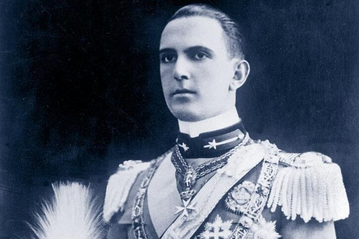

Rey Humberto II de Italia
Referéndum 1946

Parlamento Italiano
Durante la Segunda Guerra Mundial, Italia inicialmente se alió con las Potencias del Eje. Sin embargo, en 1943, después de una serie de derrotas militares y la invasión aliada de Sicilia, el Gran Consejo Fascista destituyó a Mussolini. El nuevo gobierno, encabezado por el mariscal Pietro Badoglio, cambió de bando y se unió a los Aliados. Después de la guerra, Italia estaba devastada y había una fuerte desilusión con la monarquía, que había apoyado a Mussolini. El 2 de junio de 1946, se llevó a cabo un referéndum para decidir entre la monarquía y la república. Los italianos votaron a favor de abolir la monarquía y establecer una república. El rey Humberto II de Italia, el último monarca de la Casa de Saboya, fue exiliado.
El 18 de junio de 1946, Italia fue oficialmente proclamada una república. En diciembre de 1946, se aprobó la nueva constitución republicana, que entró en vigor el 1 de enero de 1948. La constitución estableció un sistema parlamentario y garantizó una serie de derechos y libertades para los ciudadanos italianos. En los años siguientes, Italia se embarcó en un proceso de reconstrucción y desarrollo económico, conocido como el "Milagro Económico Italiano". El país se convirtió en una de las principales economías de Europa y un miembro fundador de la Unión Europea. Italia ha mantenido su sistema republicano desde entonces, y la adopción de la república marcó el comienzo de una nueva era en la historia italiana, basada en los valores democráticos y republicanos.
Last updated 3 mins ago
Rey Humberto II de Italia
Referéndum 1946
Parlamento Italiano